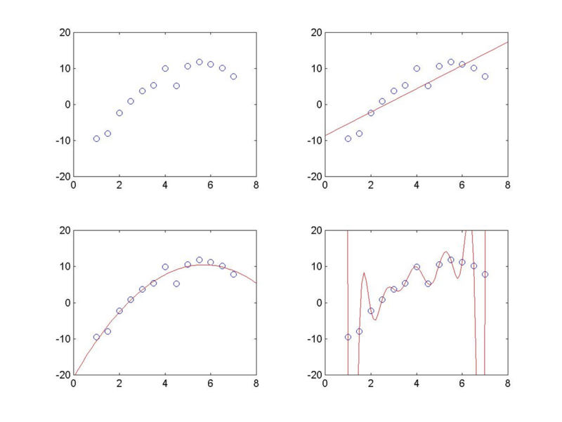

Where Occam's Razor Failed and The Search for Beauty Misled: Two Paths to Lorentz-Invariant Gravity and Higher Dimensions
- published
- reading time
- 12 minutes
TL; DR
Many books give off the idea that if you try making gravity relativistic, you have no choice but to arrive at the Einstein field equations. In fact, Finnish physicist Gunnar Nordstroem (of Reissner-Nordstroem charged black hole fame) came up with a relativistically invariant theory of gravity before Einstein, which was not only flawless theoretically, but also rather straightforwardly generalised to include electromagnetism as a natural product of the effects of Nordstroem gravity in a compactified 5th spatial dimension. The simplicity (and beauty) of the theory was remarkable, and the only way to decide between Einstein’s (nonlinear) tensor theory of gravity and Nordstroem’s (linear) scalar theory of gravity was not on theoretical grounds, but rather experimentally. On that note, why did nobody even attempt a vector theory of gravity? Einstein ended up being on the right side of history, but one must ask, why?
Occam’s Razor
I think my readers are already familiar with this principle, but it’s so pervasive and useful that it may be worth talking about nonetheless. It’s a general guiding principle of science that the simplest model that can fit most of the observed datapoints is the one we choose to believe in. It is possible to fit any set of observed datapoints a myriad of ways, but in general, we think that the easier it is to fit those points in a theory, the more likely it is that that theory reflects most accurately how the datapoints came about. For example, in the following figure, the datapoints in the first graph are fitted by a linear and two nonlinear models. Although the last curve fits them the best, it seems more likely that the second one is the true underlying behaviour of the system, the fitting gaps explained by random measurement errors evenly distributed above and below the curve. And though the linear model is even simpler, it systematically undershoots or overshoots based on the region of interest, and hence is ruled out.

With all of us on the same page now, let’s briefly see the ingredients for cooking up a relativistic theory of gravity and how Nordstroem and Einstein constructed their own models of gravity to fit within a relativistic framework.
Ingredients for Gravity
First up, you need a gravitational field. This should couple, in some form, to the energy-momentum tensor, which tells us the distribution of gravitating objects in spacetime. The gravitational field must be a geometric object in a spacetime with a Lorentzian metric, which means it is either a Lorentz scalar, or a tensor. So in schematic form, what we want is an equation that looks like $$ \boxed{\text{Gravitational field} \propto \text{Energy-momentum distribution}} $$
Since we want our gravitational field equation(s) to be Lorentz-invariant, the gravitation field and the energy-momentum distribution must therefore be described by tensors of identical rank. That leaves us with two options for constructing a Lorentz-invariant theory since the energy-momentum tensor $T^{\mu\nu}$ is a rank-2 tensor field.
- Scalar gravity: We construct a Lorentz scalar out of $T^{\mu\nu}$ by taking its trace $T^\mu_\mu = g_{\mu\nu}T^{\mu\nu}$, which means the gravitational field itself has to be a Lorentz scalar as well, OR
- Tensor gravity: We can take the energy-momentum tensor $T^{\mu\nu}$ as it is, and then couple it to a gravitational field described by another rank-2 tensor, call it $G^{\mu\nu}$.
(What about vector gravity? Keep reading to find out!)
In either case, there is the additional requirement that when $v « c$, the equations must reduce to Newton’s law of gravitation, in order to have at least as much predictive power as Newton in the nonrelativistic limit. Now we briefly look at Newtonian gravity in its field-theoretic form, after which we’ll look at how each of the above two options generalise to make it Lorentz-invariant.
Gravity in the Newtonian Realm
Newtonian gravity is most usefully described by the following differential equation $$ \nabla^2\phi (\vec{x}) = 4\pi G \rho (\vec{x}) $$
called the Poisson equation. This describes how the gravitational potential $\phi$ varies around the point $\vec{x}$ , depending on the mass density at point $\vec{x}$. Note that the $\nabla^2$ operator, known as the Laplacian, is defined as $$ \nabla^2 := \partial_x^2 + \partial_y^2 + \partial_z^2 $$
Clearly, the absence of a time coordinate from the Poisson equation means that all changes to the field in response to the matter distribution $\rho(\vec{x})$ is instantaneous, in blatant violation of the principles of relativity. So now we look to upgrade this Poisson equation to make it relativistically consistent.
Paths to Gravity: Scalar Edition
This is the simplest path to a Lorentz-invariant gravity. We simply replace the Laplacian with the d’Alembertian, defined as $$ \Box := \nabla^2 - \frac{1}{c^2}\partial_t^2 $$
and replace the mass density $\rho(\vec{x})$ with the trace of the stress-energy tensor $T = T^\mu_\mu$. Note that as $c \rightarrow \infty$, $\Box \rightarrow \nabla^2$, and $T \rightarrow \rho$ (since the pressure components become negligible in the sum), so we recover Newtonian gravity in the nonrelativistic limit. This scalar theory, then, is written as
$$ \Box\phi = \frac{4\pi G}{c^2} T, $$
or in manifestly covariant notation:
$$ \boxed{\partial^2\phi = \partial_\mu\partial^\mu\phi = 4\pi G T^\mu_\mu} $$
This is Nordstroem’s scalar gravity equation. Note the following peculiarities of the theory:
- Since $\Box$ is a linear differential operator, this theory of gravity is strictly linear - i.e. if you take two gravitating objects in isolation and add up their gravitational fields, you get the combined gravitational field due to the two-body system. This linearity of the theory makes it extremely simple to come up with general solutions to gravitational problems.
- The right hand side contains the trace of the energy-momentum tensor, with contributions from all forms of matter and energy except gravitational potential energy, which appears on the left hand side. This is important for two reasons. Firstly, this means that if the energy-momentum tensor of some field is traceless, it’s not influenced by gravity. This is true for the electromagnetic field, for example, since the equation of state for EM radiation is given by $p = \frac{1}{3}\rho$, which means the trace (using signature $(-, +, +, +)$) becomes $T = -\rho + 3p = 0$. So here we come to the first major prediction of the Nordstroem theory that we couldn’t tell within the framework of pure Newtonian gravity - gravity doesn’t affect light. Now, of course, it’s common knowledge that gravity does bend light. But it wasn’t known back then whether gravity affected light at all, and Nordstroem was the first to give a conclusive answer.
- Secondly, the right side containing only non-gravitational mass-energy is important for the following. Due to mass-energy equivalence, we expect the gravitational potential energy between the two objects to also exert its own gravitational influence, which is why the combined field should not be just a sum of the individual fields, provided we accept mass-energy equivalence. So Nordstroem’s scalar gravity being linear also means it does not couple to gravitational self-energy.
- The theory satisfies the weak equivalence principle, which states that massive bodies, regardless their composition and masses, are influenced by gravity the same way. It doesn’t, however, satisfy the strong equivalence principle, which states that in a small enough frame, no experiment, gravitational or otherwise, could distinguish between a uniformly accelerating frame and gravity. So an experimenter could utilise this to distinguish a uniformly accelerating frame from a local gravitational field - they just need to fire a laser beam. The accelerated frame would show a bending of the beam, whereas by virtue of point 2 above, the gravitating frame would not. So Nordstroem’s theory satisfies the WEP, but not the SEP.
Note that there was no a priori reason why the SEP should hold since we could only observe the effects of the WEP in terrestrial experiments. Only when we look at the motion of light around large bodies can we see how the predictions of a theory based on the SEP differs from a scalar gravity theory like Nordstroem’s.
An Aside: Why Not Vector Gravity?
A simple plausibility argument suffices for our purposes. Remember how Maxwell’s equations are written in covariant form (assuming natural units)? Here’s a reminder: $$ F_{\mu\nu} := \partial_\mu A_\nu - \partial_\nu A_\mu \newline \partial_\mu F^{\mu\nu} = J^\nu $$ where I’ve avoided writing down the 2 source-free Maxwell equations since they are tautologies that follow from the definition of the Faraday tensor $F_{\mu\nu}$ (which is more obvious from the differential forms notation but that is out of the scope of this article). This is in general the only form the equations of motion can take for a vector (or a 1-form) field $A^\mu$, and this results in a theory in which like charges repel. Not good for gravity!
More rigorously, this can be proven within the framework of quantum field theory, where you can show that force-carriers with an even spin give rise to a force where like charges attract, whereas force-carriers with odd spin give rise to a force where opposites attract. Spin-0 fields are scalars, spin-1 are vector fields, spin-2 are rank-2 tensor fields, and so on.
The Nordstroem Theory of (Nearly) Everything
The most beautiful part about Nordstroem’s theory of gravity is that it allows us to readily unify electromagnetism and gravity as two sides of the same coin. Recall from the previous section the Maxwell equations in covariant form. We didn’t specify the number of dimensions there, did we? We can easily, therefore, make the vector potential 5 dimensional. The first four components of $A_\mu$ are the usual electromagnetic field components. The fifth one, $A_5 := \phi$ results in gravity.
An Aside (2): The Equivalence Principle
The equivalence principle is one of the most profound realisations that ever occurred to us humans. In its most basic form, it’s the realisation that all objects in a gravitational field are affected the same way regardless of their masses and compositions. So it’s as if all objects are moving inertially through space in an elevator accelerating up. Specifically, this is called the weak equivalence principle. In this avatar, though, the principle requires nothing more of the gravitational field - in particular, it may or may not affect massless objects, and even if it does, the effect may be different from that on massive particles. So it is, in principle, allowed that a theory obeying the WEP may allow detection of a gravitational field by observing differing behaviours of matter and radiation. In an upwards-accelerating elevator, a horizontal light ray would seem to get bent, whereas, for example, in a Nordstroem gravitational field, it would remain moving in a straight line. In a stronger version, thus, it’s required that no experiment of any kind can distinguish locally between a uniform gravitational field and a uniformly accelerating frame. This is called the strong equivalence principle.
An Aside (3): The Geometry of Nordstroem
Nordstroem gravity readily lends itself to a geometric reinterpretation through a reformulation starting from an action principle. This yields two further important results:
- Even though light rays don’t bend in Nordstroem gravity, they undergo gravitational redshift.
- Nordstroem gravity can be viewed as due to curvature of spacetime, where spacetime remains conformally flat, meaning that the metric becomes $g_{\mu\nu} = A(\phi)\eta_{\mu\nu}$, where $A(\phi)$ is a function of the scalar potential field. This gives yet another way of seeing why light rays aren’t bent by the curvature of spacetime: since $ds^2 = 0 = g_{\mu\nu}dx^\mu dx^\nu = A(\phi) \eta_{\mu\nu}dx^\mu dx^\nu$, any path that satisfies $\eta_{\mu\nu}dx^\mu dx^\nu = 0$ automatically remains the same in the gravitational field.
Paths to Gravity: Tensor Edition
Now we consider the other option - the rank-2 tensor gravitational field. This is the route Einstein took. Since it doesn’t couple to the trace of $T_{\mu\nu}$, this correctly predicts that light rays bend under the influence of gravity. Einstein argued on the basis of a conviction that there’s no reason why gravitational self-energy itself cannot gravitate - an ingredient that, if you put it into your pet gravity theory broth - makes it nonlinear: the combined gravitational field of a two-body system is no longer the sum of the individual gravitational fields in isolation. So the tensor edition comes with the strong equivalence principle baked into it. Here’s the Einstein field equations for you to soothe your eyes with:
$$ \boxed{G_{\mu\nu} = 8\pi GT_{\mu\nu}} $$
Unlike the scalar field which can give the metric just a conformal factor, the tensor field can change all 10 independent components of the metric. So while Nordstroem gravity just scales spacetime by different amounts, Einstein gravity allows all forms of distortions of spacetime - bending, stretching, shearing - whatever you fancy. Among other things, this predicts the deflection of light in the presence of gravity, which gives us an empirical way of deciding between Einstein and Nordstroem. Nordstroem published his theory in 1913, Einstein in 1915. Sir Arthur Eddington famously proved Einstein right in 1919 by measuring the deflection by 1.75 arcseconds of light passing by the sun, exactly as predicted by general relativity. But the point of this whole article has been to convey to you that there was no a priori reason for believing in Einstein any more than in Nordstroem. They both reduce to Newtonian gravity in the nonrelativistic limit, and predict a curved spacetime. It’s only by their differing predictions in the relativistic realm that we can decide which one better describes our universe.
Kaluza-Klein Theory: GR Gets High on Dimensions
Like its Nordstroemian predecessor, GR also can get high on dimensions, and adding in a 5th (compactified) spatial dimension allows us to gain new insights into the nature of electromagnetism. In particular, it demystifies the otherwise cryptic gauge invariance of Maxwell’s theory - it’s just rotational invariance in the fifth dimension. But no more of it today. We’ll discuss higher dimensional gravity theories in the next episode.
Concluding Remarks and References
This has been rather complicated for a blog post, but the entire point of it was to illustrate that physics is, above all, a science, and like all sciences, must rely on empirical observations. A priori notions of symmetry and beauty may guide us, but they cannot lead us all the way to the truth - we must go out and ask the universe itself (may be a dictum worth remembering for the die-hard string theory worshippers out there!). Between Einstein and Nordstroem’s gravity theories, Nordstroem was much simpler and readily incorporated electromagnetism into the same framework, yet it didn’t stand up to experimental scrutiny, hence it had to be discarded. Einstein’s GR is as beautiful as it is complicated, but for now it remains our best theory of gravity, not because of some a priori notion it satisfies, but because it best meets our range of experimental data.
Here’s a list of references I’ve consulted for today’s post.
- Zee, Einstein Gravity in a Nutshell - Chapters IX.5, X.1.
- Padmanabhan, Gravitation: Foundation and Frontiers - Chapter 3.
- Blau, Lecture Notes on General Relativity - Chapter 44.